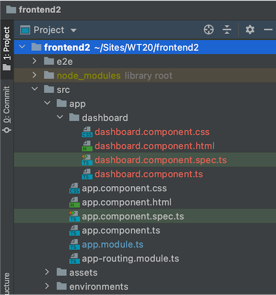
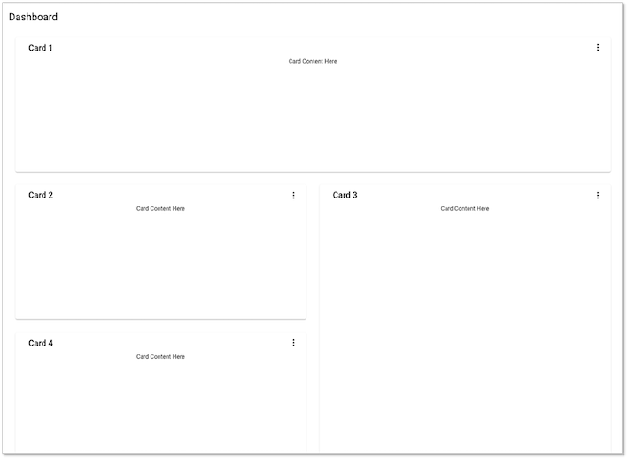
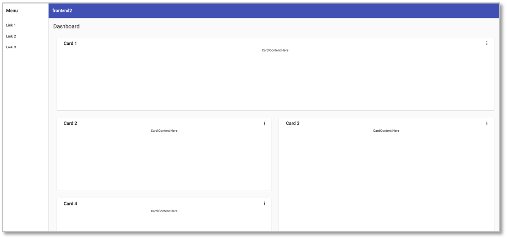

Material für Angular¶
Wir haben für unser frontend in Übung 6 bereits Material als CSS-Framework verwendet und wollen dieses hier näher untersuchen, um Angular unter Zuhilfenahme von Material besser kennenzulernen. Zunächst nochmal, wie man einer existierenden Anwendung Material hinzufügt:
ng add @angular/material
In der angular.json werden dann unter "projects"-->"architect"-->"build" und unter "projects"-->"architect"-->"test" die "styles" wie folgt konfiguriert:
"styles": [
"./node_modules/@angular/material/prebuilt-themes/indigo-pink.css",
"src/styles.css"
],
Dabei hängt es jedoch davon ab, welches prebuilt-theme Sie gewählt haben. Es gibt diese vier vorgefertigten Themen:
deeppurple-amber.cssindigo-pink.csspink-bluegrey.csspurple-green.css
Einen Überblick über die unterschiedlichen Komponenten, die Material bereitstellt, finden Sie hier. Wir werden einige davon im folgenden verwenden.
Material Schematics¶
Ein großer Vorteil von Material ist, dass dieses Framework bereits sogenannte Schematics liefert, welche vorgefertigte Komponenten erstellen können. Wir werden hier drei davon näher beleuchten
- Navigation
- Dashboard
- Tabelle
Wir erstellen uns nachfolgend nochmal eine Anwendung mit diesen Schematics. Sie können sich mit diesem GitHub-Link das gesamte Projekt clonen und es hier miterstellen.
Wir erstellen uns ein neues Projekt frontend2 mithilfe von
ng new frontend2
Wir wählen stricter type checking, routing und CSS. Dann wechseln wir in den fromntend2-Ordner und fügen Material hinzu.
cd frontend2
ng add @angular/material
Als prebuilt theme wählen wir Indigo/Pink und entscheiden uns für Material typography styles und browser animations (jeweils y).
Dashboard¶
Jetzt verwenden wir das erste Schema von Material, das dashboard-Schema und erstellen damit eine Komponente dashboard.
ng generate @angular/material:dashboard dashboard
Unsere Komponente heißt also genauso wie das Schema (:dashboard ist das Schema, das letzte Argument der Name der Komponente).
Wir öffnen unsere IDE und sehen, dass die dashboard-Komponente angelegt wurde:

Jetzt binden wir die dashboard-Komponente in die app-Komponente ein. Dazu löschen wir alles aus src/app/app.component.html und fügen stattdessen den Komponenten-Selektor der dashboard-Komponente ein:
<app-dashboard></app-dashboard>
Unsere Seite (http://localhost:4200/) sieht dann so aus:

typischer Fehler
Sollte in Ihrer IDE ein Fehler wie z.B.
This likely means that the library (@angular/material/sidenav) which declares MatSidenavModule has not been processed correctly by ngcc, or is not compatible with Angular Ivy. Check if a newer version of the library is available, and update if so. Also consider checking with the library's authors to see if the library is expected to be compatible with Ivy.
1 export declare class MatSidenavModule {
~~~~~~~~~~~~~~~~
node_modules/@angular/material/list/list-module.d.ts:8:22 - error NG6002: Appears in the NgModule.imports of AppModule, but could not be resolved to an NgModule class.
This likely means that the library (@angular/material/list) which declares MatListModule has not been processed correctly by ngcc, or is not compatible with Angular Ivy. Check if a newer version of the library is available, and update if so. Also consider checking with the library's authors to see if the library is expected to be compatible with Ivy.
8 export declare class MatListModule {
~~~~~~~~~~~~~
ng serve (z.B. rotes Rechteck rechts oben in der IDE) und starten ng serve erneut.
Schauen wir uns die dashboard.component.html und die dashboard.component.ts einmal etwas genauer an:
1 2 3 4 5 6 7 8 9 10 11 12 13 14 15 16 17 18 19 20 21 22 23 24 | |
1 2 3 4 5 6 7 8 9 10 11 12 13 14 15 16 17 18 19 20 21 22 23 24 25 26 27 28 29 30 31 32 33 | |
In Zeile 4 der .html-Datei wird durch das cards-Array gelaufen und alle darin enthaltenen card-Elemente dargestellt. Das cards-Array ist in der .ts-Datei definiert. Abhängig von der Breite des Viewports liefert das BreakpointObserver-Objekt ein Array aus vier cards zurück. Angular Material CDK verwendet das layout-Paket, um das responsive Grid zu stylen. Es sind dort verschiedene Breakpoints für unterschiedliche Verhalten je nach Viewport-Breite definiert.
Wir wollen uns zunächst um diese cards kümmern und uns eine Komponente card erstellen, auf der alle andern cards basieren. Dazu geben wir innerhalb des frontend2-Ordners ein:
ng g c card -m app
1 2 3 4 5 6 7 8 9 10 11 12 13 14 15 16 17 18 | |
1 2 3 4 5 6 7 8 9 10 | |
Die title-Eigenschaft für eine card muss aus dashboard importiert werden. Wir ändern deshalb die card.component.ts:
Mithilfe von -m app melden wir die neue Komponente gleich in app.module.ts an. Dann brauchen wir das nicht selbst zu tun.
Navigation¶
Jetzt verwenden wir ein weiteres Schema, das navigation-Schema von Material. In unserem Ordner frontend2 rufen wir
ng generate @angular/material:navigation nav
nav-Komponente zu erstellen. Nun rufen wir die dashboard-Komponente nicht mehr in der app-Komponente auf, sondern in der nav-Komponente. Stattdessen wird die nav-Komponente in der app-Komponente aufgerufen:
<app-nav></app-nav>
1 2 3 4 5 6 7 8 9 10 11 12 13 14 15 16 17 18 19 20 21 22 23 24 25 26 27 28 | |
Unsere Seite (http://localhost:4200/) sieht dann so aus:

Table¶
Ein weiteres Schema, das wir verwenden wollen, ist das table-Schema von Material. In unserem Ordner frontend2 rufen wir
ng generate @angular/material:table table